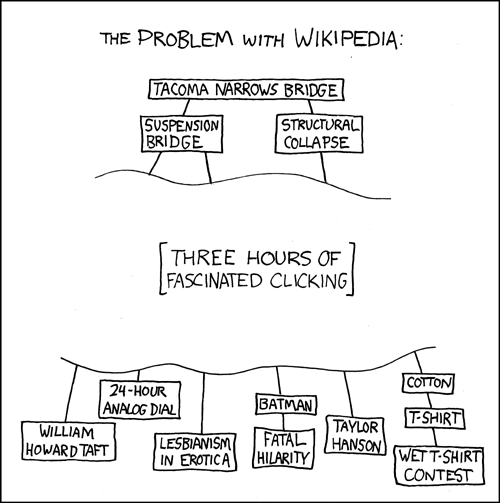

My Autodidacticism diary.
Introduction
One of my favorite people on the internet is Joe Barnard, more commonly known as BPS space on the internet. He is a man without an engineering degree, he's got a degree from berkeley college of music. A man you would have never thought would be qualified to make... rockets. From what I know about his story is that he was working in some marketing company and also worked as a wedding videographer to make a living, he then one day saw spaceX try and land a self propelled rocket and thought to himself, "Wouldn't it be cool if I worked at spaceX" (I'm taking some liberties here, it's how I'm interpreting it). He looked at his resume and realized a degree in music is not gonna cut it. So he decided to build himself a practical resume that would get his foot in the door of spaceX and atleast land him an interview. He started building model rockets that try to propulsively land. He succeded in his endaevours so much that he never needed to give an interview at SpaceX! In his words from a reddit AMA this project "eclipsed its initial goal of getting me a job, as it has become one!". This man has been really inspirational and watching his videos are always inspiring. While watching a video about some camera problems he was dealing with, he said the phrase "we're cutting the rabbit hole short here", and it stuck with me, because he was explaining the problems he was facing with video compression, how many different systems try to deal with it and he went as deep as how camera's silicon works and I thought to myself, what is a rabbit hole?
Rabbit Holes and Autodidictism
A rabbit hole defines itself as a problem or a piece of information that keeps getting ever increasingly complex and interesting the more you dig into it. This xkcd comic is an apt summary:

Watching that bps space video made me realize how little I know about the world and how much more there is to learn. There are so many different types of rabbit holes that one could never even concieve can exist. I'll illustrate what I mean with an example. Let's pick a topic, say light. If we begin learning about light, what we stop at is that light is a wave, different wavelengths means we can see different colours. Now let's open the pandora's box and look a little deeper, here's a list of theories that are used to explain how light works: - Ray Optics - Gaussian Optics - Fourier Optics - Wave Optics In a complexity increasing order. To put to scale the amount of stuff that is written up about these 4 topics, there is a 350 page book called Classical and modern optics. Here each of these is a long chapter in this book and for each of these chapters, there are 4 more chapters exploring the implications of that interpretation of light. And this is a reductionist version of the concept, I've seen a book on the exact same topic that is 1000 pages long called Fundamentals of Photonics by Saleh and Teich. "But Atharv it's just 1-2 books" you say. Oh boy, In the second book, they provide a reading list for each chapter and there are like 20 research papers for each chapter from where the conclusion is drawn from. All this is assuming you have the underlying mathematical prowess to understand all of it. This is what I mean by a rabbit hole, the more deep you go the more there always will be for you to learn.
This is the concept I would like to explore in these blogs. I pick a project that has a known rabbit hole and I dive deep into it, understanding all the technical details and what not, create something out of it. It's in a way similar to how bps space had to go about building the company literally from scratch. No knowledge base, try to build a project, fail, explore a bit of the rabbit hole, try again, fail but fail better, deeper into rabbit hole, fail again but almost get it. Do this god knows how many times and then one day succeed in landing the rocket. Difference is I would to it for a variety of different topics because I do not have a big project such as creating a spaceshot in mind although I'm open to suggestions.
Autodidacticism is self directed mastery without institutional guidance (I was looking for a fancy word). Something Joe Barnard practices every day and has been able to create something so amazing. I will begin to practice this about topics of my choosing and I would write about them. Maybe even make youtube videos about them but this is what I hope to be doing. My goals with this blog post series is for me to learn more, build some cool stuff and share it with others so that they can do it too! I believe writing about what I learnt and building projects based on that is the best way to get better at things.
Writing to learn
There was a book that I half read called writing to learn. It's a book that brings forth the idea that to properly learn something you have to be an active participant. The simplest way to be an active participant is to write. I believe the best way to learn is to do and make something regardless of knowledge levels. This is the medium I am choosing to share my autodidactic explorations in, because I would be able to go deep into the technical details of any topic and learn a lot. Working hands-on on a project I think is the fastest way to learn something and retain it properly. That is not possible in all fields like say math or literature, hence the next option is writing. Writing helps clear thoughts and provides them with structure. Writing can make ideas coherent and can make you retain them better. Which is why I am deciding on a blog format although I might make just demonstrative videos on youtube somewhere down the line.
Hope you like visiting my autodidactic explorations, for any ideas or criticism please email me.